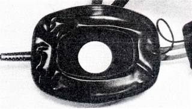
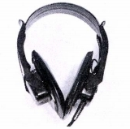
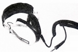
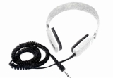

SCINTREX (シントレックス)
1970年代に輸入されていたアメリカのヘッドフォン・ブランド。当時の「STEREO GUIDE」をみても、ヘッドフォン以外の製品の記述は無く、他の機器などの詳細は不明。当時の代理店は原田産業（大阪）。液体入特殊イヤパッドを採用するなど、かなり独自性のある製品を作っていた。この時代のアメリカ製品(コスなど）としてはコンパクトな製品だったらしい。

（液体入りイヤパッド 他には1960年代のコスのESP/6のオリジナルモデルなどに例がある）
  